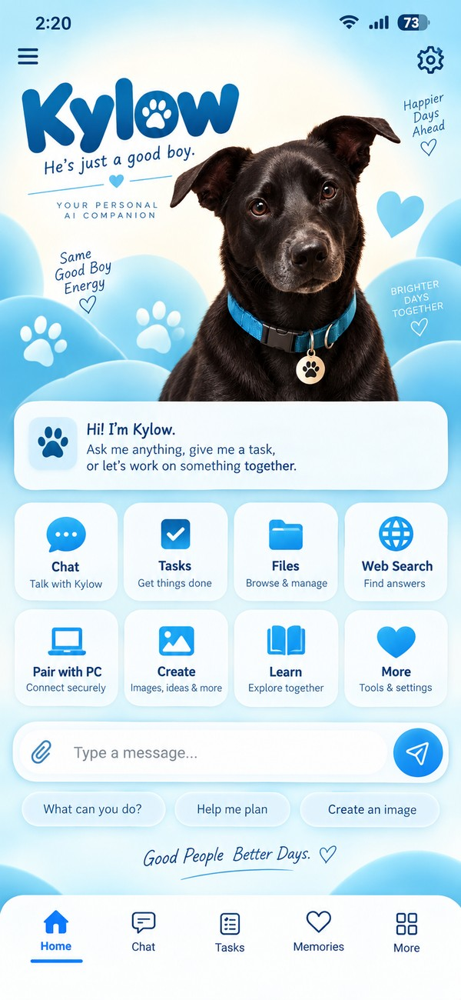

Talk naturally
A familiar conversation-first interface for questions, planning, writing, coding, and everyday work.
 KylowGet Kylow
KylowGet KylowKylow is a general-purpose personal AI designed to help you think, create, organize, research, and—when you allow it—work across your own devices and tools.

Kylow is being built as a single AI core with interfaces for your phone and computer. Conversation is only the beginning: memory, files, research, creation, approved apps, device control, and specialized agents can all become tools of the same Kylow.
A familiar conversation-first interface for questions, planning, writing, coding, and everyday work.
Private memory is designed to preserve useful context while keeping controls for access, export, recovery, and deletion.
Connect capabilities intentionally. Kylow should know what it may do, what needs confirmation, and what stays off-limits.
Link your own devices securely so the same Kylow can move with you without turning your computer into a public endpoint.
The long-term platform includes coding, files, research, multimodal creation, and task-specific worker agents.
Each installation gets its own identity, data boundaries, permissions, and device relationships. Another user's Kylow is not yours.
The production target is a normal downloadable application—not PowerShell, Python, Git, or manual ports. Install, launch, pair, update.
IN DEVELOPMENTKylow Mobile is designed to function on its own while optionally linking to your computer for approved remote capabilities.
IN DEVELOPMENTThe core architecture is intended to support future endpoints without creating a different AI for every device.
PLANNEDKylow's architecture is being built around encrypted private data, authenticated devices, scoped permissions, secure transport, action logs, recovery controls, and confirmation for sensitive operations.
Security is an ongoing engineering process. Development builds are not represented as production-certified security products.
Progress advances when functionality is built and verified—not when it is merely planned.
Windows and Android builds are actively being developed. Public downloads will appear here when the release path is safe and repeatable.